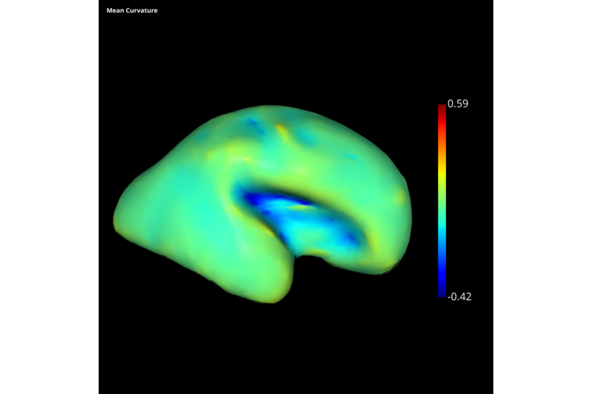
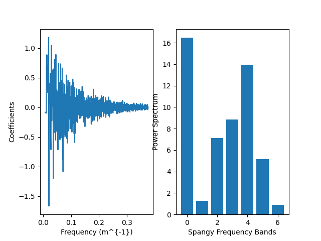
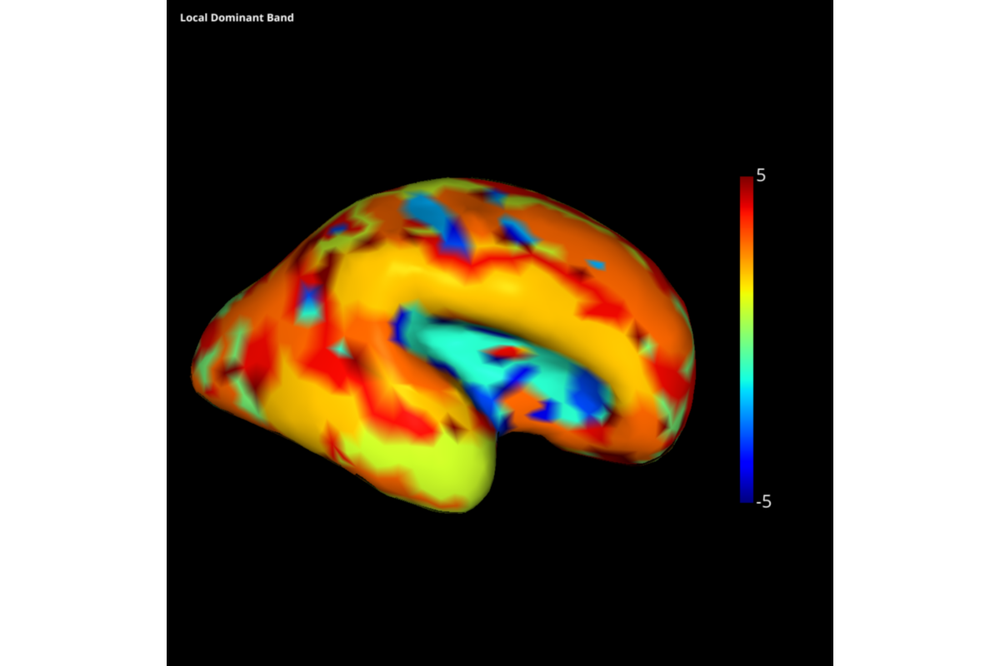

Note
Click here to download the full example code
J.F. Mangin, Larger is twistier:Spectral Analysis of Gyrification (SPANGY) applied to adult brain size polymorphism,Neuroimage, 63 (3), 1257-1272, 2012. ===================================
- 
- 
- 
Out:
Computing Laplacian
Computing mesh weights of type fem
-edge length threshold needed for 0 values = 0.0 %
-number of Nan in weights: 0 = 0.0 %
-number of Negative values in weights: 936 = 6.706792777300086 %
-nb Nan in Laplacian : 0
-nb Inf in Laplacian : 0
Calculating vertex normals .... Please wait
Finished calculating vertex normals
Calculating curvature tensors ... Please wait
Finished Calculating curvature tensors
Calculating Principal Components ... Please wait
Finished Calculating principal components
** a. Whole brain parameters **
Volume = 30 mL, Area = 64 cm^2, Analyze Folding Power = 37.227117,
** b. Band number of parcels **
B4 = 0.000000, B5 = 0.000000, B6 = 0.000000
** c. Band power **
B4 = 13.947520, B5 = 5.143363, B6 = 0.897768
** d. Band relative power **
B4 = 0.37466, B5 = 0.13816 , B6 = 0.02412
[[16.46169123]
[ 1.2554124 ]
[ 7.13591677]
[ 8.84713751]
[13.94752013]
[ 5.14336266]
[ 0.89776759]]
import slam.io as sio
import numpy as np
import slam.differential_geometry as sdg
import slam.curvature as scurv
from scipy.sparse.linalg import eigsh
import time
import slam.plot as splt
import matplotlib.pyplot as plt
import slam.spangy as spgy
## LOAD MESH
mesh = sio.load_mesh("../examples/data/example_mesh.gii")
N = 1500
# Compute eigenpairs and mass matrix
eigVal, eigVects, lap_b = spgy.eigenpairs(mesh,N)
## CURVATURE
PrincipalCurvatures, PrincipalDir1, PrincipalDir2 = \
scurv.curvatures_and_derivatives(mesh)
mean_curv = 0.5 * (PrincipalCurvatures[0, :] + PrincipalCurvatures[1, :])
# Plot of mean curvature on the mesh
visb_sc = splt.visbrain_plot(mesh=mesh, tex=mean_curv, caption='Mean Curvature', cmap='jet')
visb_sc.preview()
## WHOLE BRAIN SPECTRUM
grouped_spectrum,group_indices,coefficients = spgy.spectrum(mean_curv, lap_b, eigVects, eigVal)
levels=len(group_indices)
# a. Whole brain parameters
mL_in_MM3=1000
CM2_in_MM2=100
volume = mesh.volume
surface_area = mesh.area
afp=np.sum(grouped_spectrum[1:])
print('** a. Whole brain parameters **')
print('Volume = %d mL, Area = %d cm^2, Analyze Folding Power = %f,' % (np.floor(volume/mL_in_MM3),np.floor(surface_area/CM2_in_MM2),afp))
# b. Band number of parcels
print('** b. Band number of parcels **')
print('B4 = %f, B5 = %f, B6 = %f' % (0,0,0))
# c. Band power
print('** c. Band power **')
print('B4 = %f, B5 = %f, B6 = %f' % (grouped_spectrum[4],grouped_spectrum[5],grouped_spectrum[6]))
# d. Band relative power
print('** d. Band relative power **')
print('B4 = %0.5f, B5 = %0.5f , B6 = %0.5f' % (grouped_spectrum[4]/afp,grouped_spectrum[5]/afp,grouped_spectrum[6]/afp))
# Create two subplots
fig, (ax1, ax2) = plt.subplots(1, 2)
# Plot the sqrt of the eigVals divided by 2*np.pi against the coefficients in the first subplot
ax1.plot(np.sqrt(eigVal[1:])/(2*np.pi),coefficients[1:])
ax1.set_xlabel('Frequency (m^{-1})')
ax1.set_ylabel('Coefficients')
# Barplot for the nlevels and grouped spectrum in the second subplot
# Barplot in ax2 between nlevels and grouped spectrum
print(grouped_spectrum)
ax2.bar(np.arange(0,levels),grouped_spectrum.squeeze())
ax2.set_xlabel('Spangy Frequency Bands')
ax2.set_ylabel('Power Spectrum')
plt.show()
## LOCAL SPECTRAL BANDS
loc_dom_band, frecomposed = spgy.local_dominance_map(coefficients,mean_curv,levels,group_indices,eigVects)
# Plot of spectral dominant bands on the mesh
visb_sc = splt.visbrain_plot(mesh=mesh, tex=loc_dom_band, caption='Local Dominant Band', cmap='jet')
visb_sc.preview()
Total running time of the script: ( 0 minutes 31.582 seconds)